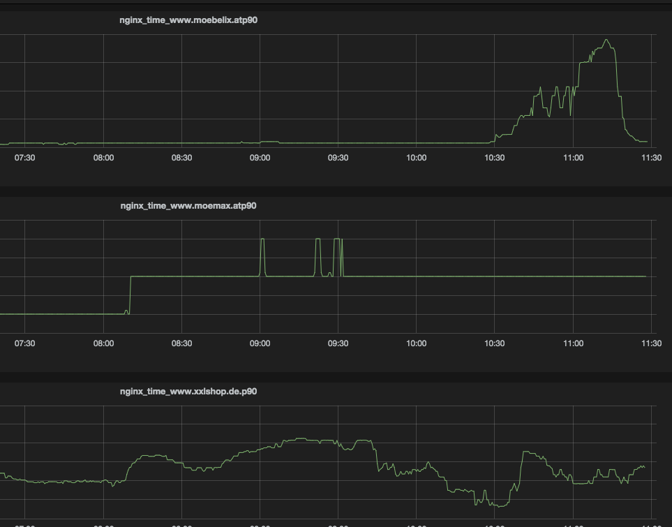
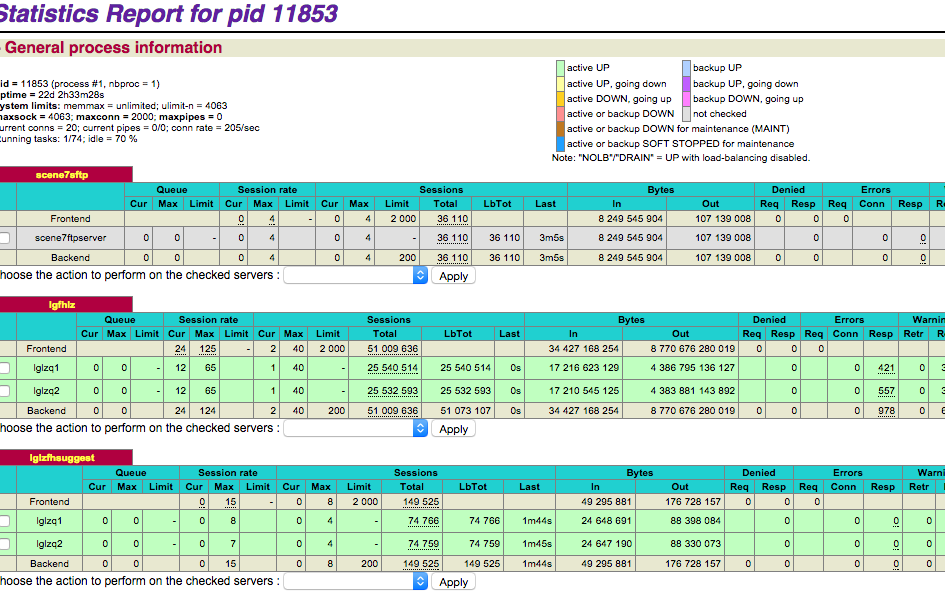

nginx, varnish & haproxy @ Netconomy
Created by Robert Bartl / @robert_bartl
NGINX
nginx is a very fast http server which is mostly used for reverse Proxy purposes. and stands at the forefront of our web systems.
Features
- Flexible Configuration
- Fast (epoll support)
- SSL
- low memory footprint (keep alive)
- few security problems
Flexible Configuration
- Variables
- IF Blocks (do not nest!)
Netconomy specifics
- URL Whitelisting
- splitting in small include files
- Single Repo (merges in all directions posible)
- URL Groupings
NGINX logging & Monitoring
/var/log/nginx/*
- access log for each host
- error log for each host
logstash
- parses the log files
- keeps in memory metrics and statistics
- output to
graphite or similar stuff - INFLUXDB !!!
graphite chart 90'th percentile

VARNISH
varnish is a c based, in memory HTTP Cache
Features
- Extremely Flexible Configuration
- Fast (in memory)
- awesome debugging/metrics
Downsides
- NO Cluster support
- NO SSL support
- logging
Flexible Configuration
- C Based
- Programmable
- many stages to adapt (subroutines)
- Real C Modules possible (not recommended)
VARNISH: Netconomy specifics
- TTL taken from NGINX config
- splitting in small include files for subroutines
- variable backends (lutz)
- Check hostname
- PURGE and BAN Features
VARNISH: Future Features
- Smaller config
- remove useless handling of url groups
- consolidate accross projects
- automatic managment(puppet) of hostname check file
- monitoring
HAPROXY
haproxy is a small load balancer with many features and an web and REST interface.
Features
- small configuration
- low cpu usage
- NO SSL (only recently)
- NO AJP
- few security problems
- web/REST interface
- alive checks
- redispatch (broken backends)
- cookie based session fixation
HAPROXY: Netconomy specifics
- configs splitted for stage/Q/P (/active directory)
- startup script adapted for point 1
- session fixation via cookie
- no keep alive
HAPROXY: Web Interface

Max Proxy Throughput
- 800Mbit/s
- cached & direct hits
Monitoring
- grafana
- influxdb
- statsd
- logstash
Puppet & foreman
- fast installation of test machines
openstack / ceph
- integration with foreman
- possiblity for short lived developer machines
- dynamic storage
END
BY Robert Bartl
References
- Hashing Picture stolen from http://www.tomkleinpeter.com/2008/03/17/programmers-toolbox-part-3-consistent-hashing/